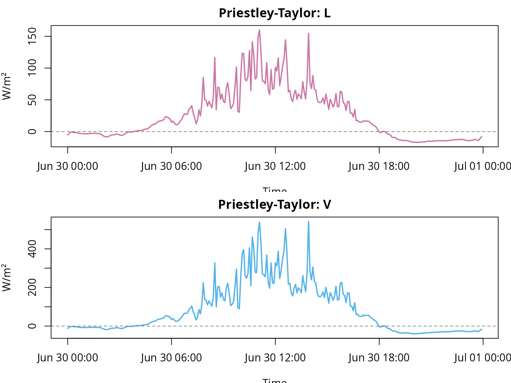
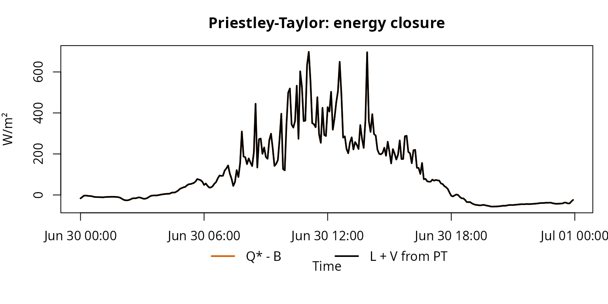
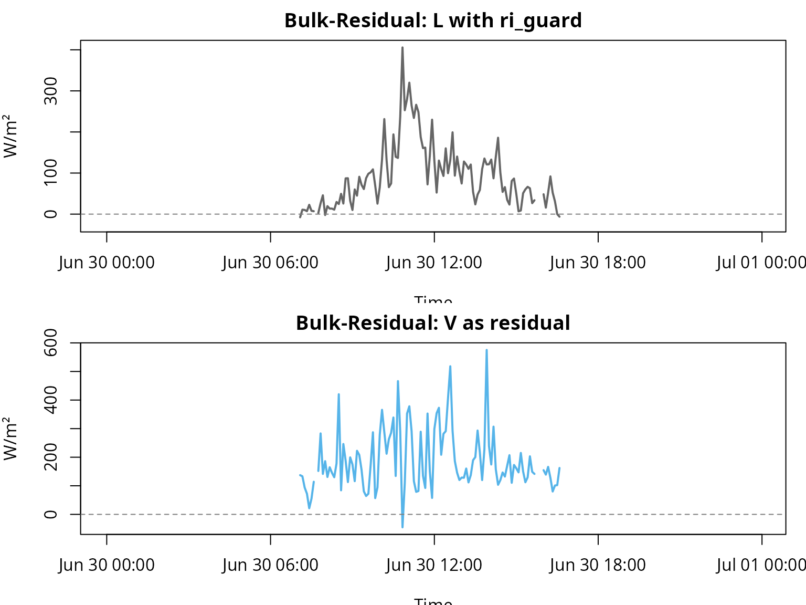
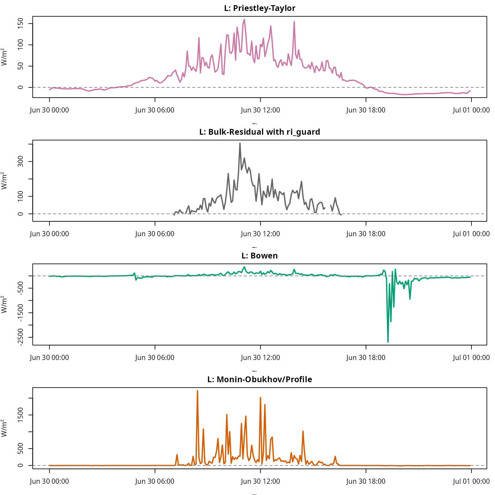
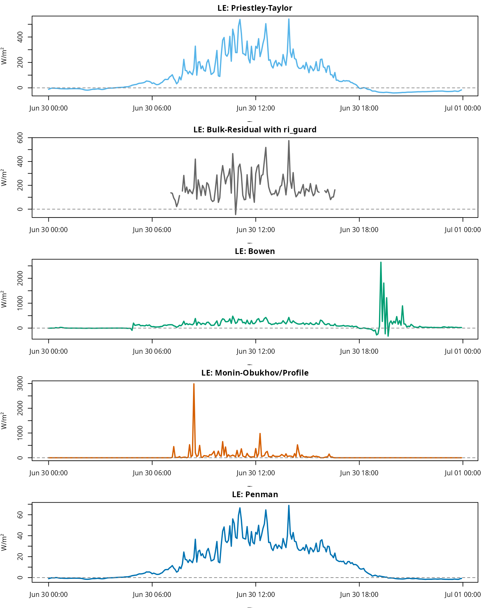
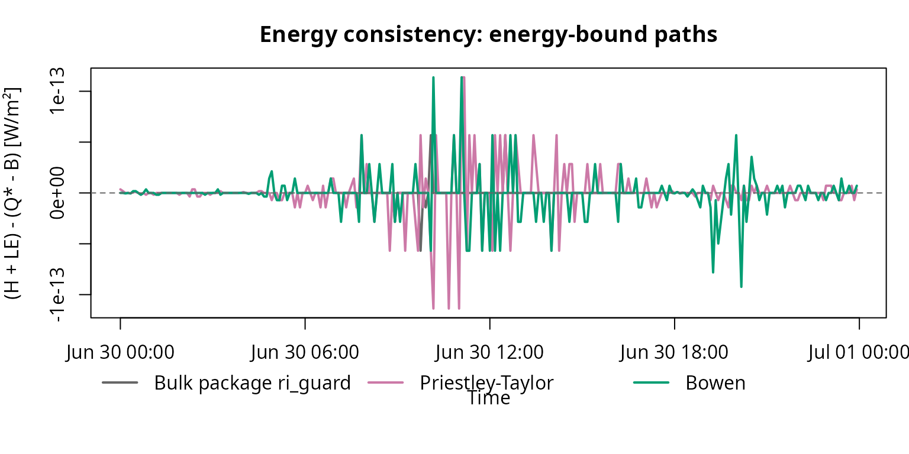
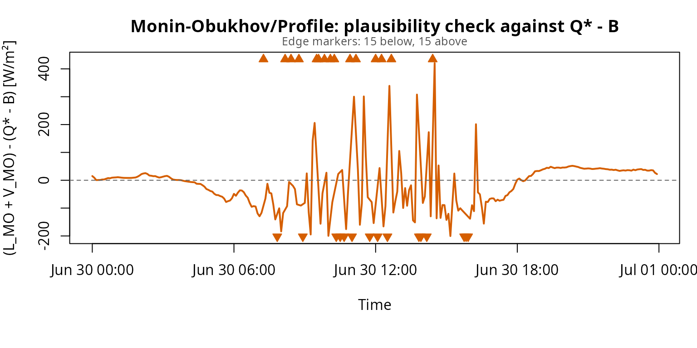

fieldClim: Heat-flux workflow with package methods
Jörg Bendix, Chris Reudenbach
2026-05-28
Source:vignettes/fieldclim_flux_workflow_en.Rmd
fieldclim_flux_workflow_en.RmdPurpose of this vignette
This vignette is the package-workflow part of the Caldern example. It
starts after the manual data checks: the relevant columns have already
been identified as net radiation, soil heat flux, temperature, humidity
and wind inputs. They are now passed to a weather_station
object and evaluated with fieldClim functions.
A systematic decision guide for matching heat-flux methods to measurement architecture is provided in Choosing fieldClim Heat-Flux Methods by Measurement Design. This vignette applies that logic to the Caldern example dataset.
The focus is no longer the manual checking of individual measurement columns. The focus is package logic: how the station data are organized, how inputs are inspected, which method families are available, and how their outputs should be compared.
| Step | Question | Package area |
|---|---|---|
| 1 | Which heat-flux method families are distinguished? | method concept, energy closure, profile diagnostics |
| 2 | How is the dataset passed to fieldClim? |
build_weather_station() |
| 3 | Which inputs does the inspection function detect? | inspect_weather_station_inputs() |
| 4 | How are Priestley-Taylor, Bulk-Residual, Bowen, Monin-Obukhov/Profile and Penman compared? |
turb_flux_calc(),
turb_flux_bulk_residual() and method-specific outputs as
distinct calculation paths |
The data basis is loaded from the packaged Caldern example file. Manual checks of time structure, radiation components, soil heat flux and available energy belong to the companion vignette on data checks. Here we use those checked quantities as inputs for the package workflow.
Notation
This vignette uses the reference notation from the method-selection
page. Q* is net radiation, B is soil heat
flux, A = Q* - B is available energy, H is
sensible heat flux, LE is latent heat flux, and
R_E is the residual or non-closed energy term.
The R code variables used in this tutorial are not renamed. Existing
objects such as L_pt, V_pt,
L_bulk_pkg, and V_bulk_pkg are kept because
they belong to the current tutorial workflow. In the explanatory text,
however, L_* is interpreted as H, and
V_* is interpreted as LE.
For package functions, this notation is mapped to
fieldClim names:
| Reference quantity | Meaning |
fieldClim field or output |
Tutorial code variable |
|---|---|---|---|
Q* |
net radiation | rad_bal |
Q_star |
B |
soil heat flux | soil_flux |
B |
A = Q* - B |
available energy | rad_bal - soil_flux |
available_energy, Q_minus_B
|
H |
sensible heat flux | sensible_* |
L_* |
LE |
latent heat flux | latent_* |
V_* |
R_E = Q* - B - H - LE |
residual / non-closed energy term | closure diagnostic output |
diff_*, closure_residual
|
The sign convention is:
\[ Q^* - B = H + LE \]
for energy-closing or residual methods in valid finite cases. This relation is not imposed on all method families.
Step 1: Method overview and role of each path
All methods use the same station concept, but they do not answer the same question. They are distinct calculation paths: some partition available energy, some estimate one flux and compute the other as a residual, and some use measured vertical profiles without forcing closure against available energy. The method choice follows the logic of Choosing fieldClim Heat-Flux Methods by Measurement Design: the measurement architecture and the target quantity determine what can be interpreted.

| Method | Main question | Direct inputs | Code output | Reference notation | Role in the workflow |
|---|---|---|---|---|---|
| Priestley-Taylor | How is available energy partitioned through an empirical evaporation parameterization? |
rad_bal, soil_flux, temp,
surface_type
|
L_pt, V_pt
|
H_PT, LE_PT
|
available-energy partition |
| Bulk-Residual | How is sensible heat estimated from a two-height temperature gradient and exchange assumption, and how is latent heat derived as the residual? |
t1, t2, v1, optional
v2, z1, z2, rad_bal,
soil_flux
|
L_bulk_pkg, V_bulk_pkg
|
H_bulk, LE_res
|
direct H estimate plus residual LE
|
| Bowen-ratio | How do temperature and humidity gradients partition available energy? |
t1, t2, hum1,
hum2, z1, z2,
rad_bal, soil_flux
|
L_bowen, V_bowen
|
H_BR, LE_BR
|
gradient-based partition |
| Monin-Obukhov/Profile | What do temperature, humidity and wind profiles imply as diagnostic profile fluxes? |
t1, t2, hum1,
hum2, v1, v2, z1,
z2, roughness context |
L_monin, V_monin
|
H_MO, LE_MO
|
profile/stability diagnostic, not force-closed |
| Penman | How large is latent heat flux from available energy and aerodynamic drying power? |
rad_bal, soil_flux, meteorology, site and
surface parameters |
V_penman |
LE_Penman |
LE-only comparison path |
Priestley-Taylor
Priestley-Taylor is an available-energy partition path in this vignette. It is directly bound to available energy and does not require a measured humidity-gradient ratio.
\[ H + LE = Q^* - B \]
\[ LE_{PT} = \alpha_{PT} \frac{sc}{sc + \gamma} (Q^* - B) \]
\[ H_{PT} = (Q^* - B) - LE_{PT} \]
The defining property of this calculation path is energy bookkeeping.
If Q_star and B are set correctly, the sum of
H_PT and LE_PT remains tied to available
energy. In the code, these quantities are stored as L_pt
and V_pt. This is a method-specific partition, not an
independent validation of both component fluxes.
Bulk-Residual with optional Richardson guard
The calculation path turb_flux_bulk_residual() first
estimates sensible heat flux with a bulk-transfer equation. Latent heat
flux is then computed as the residual of the surface energy balance:
\[ H_{bulk} = \rho c_p \frac{t_1 - t_2}{r_a} \]
\[ r_a = \frac{\ln(z_2 / z_1)}{k \bar{u}} \]
\[ LE_{res} = Q^* - B - H_{bulk} \]
In addition, sensible_bulk() can compute a gradient
Richardson number when stability_method = "ri_guard" is
used:
\[ Ri_g = \frac{g}{\bar{\theta}} \frac{\Delta \theta / \Delta z} {(\Delta u / \Delta z)^2} \]
The guard is not the default. It is activated only by setting
stability_method = "ri_guard". Unstable, neutral and
moderately stable cases keep the neutral bulk value. Very stable,
invalid or weak-shear cases are set to NA. If
H_bulk becomes NA, the residual
LE_res also becomes NA. In the code, these
quantities are stored as L_bulk_pkg and
V_bulk_pkg. This makes visible that the neutral Bulk
estimate was not evaluated for those timesteps.
The Richardson guard is a filter option, not a stability correction. It does not turn Bulk-Residual into a Monin-Obukhov method.
Bowen-ratio
The Bowen approach uses a ratio between temperature and humidity gradients. It partitions the available energy into sensible and latent heat flux.
\[ \beta \approx \frac{\Delta T}{\Delta e} \]
In fieldClim, the implementation is more specific than
this simplified textbook notation. It uses a potential-temperature
difference and an absolute-humidity difference with an empirical
fieldClim coefficient. Therefore, Bowen is interpreted here
as the implemented calculation path, not as a claim that the coefficient
form has been fully proven equivalent to every textbook Bowen
formulation.
\[ H_{BR} = \frac{\beta}{1 + \beta} (Q^* - B) \]
\[ LE_{BR} = \frac{1}{1 + \beta} (Q^* - B) \]
For finite, uncapped denominator cases, the Bowen calculation path
closes the available energy. In the code, the outputs are stored as
L_bowen and V_bowen. It is nevertheless
sensitive to gradients. If humidity gradients become very small, signs
change, beta is not finite or 1 + beta
approaches zero, individual timesteps can produce strong excursions.
Capped or non-finite cases should not be read as exact partitions of
\[Q^* - B\].
Monin-Obukhov/Profile as diagnostic path
The Monin-Obukhov/Profile calculation path is interpreted here as a
profile and stability diagnostic. It is not a method that automatically
partitions available energy into H and LE. It
calculates heat fluxes from measured differences between two heights:
temperature, humidity, wind and measurement height directly determine
the profile calculation. The method is therefore sensitive when
gradients are small, noisy or contradictory.
The current package version catches several problematic cases
explicitly. If the temperature gradient between the two heights is zero,
sensible heat flux is set to zero for that timestep. If the humidity
gradient is zero, latent heat flux is set to zero. Invalid measurement
heights, missing wind values or non-evaluable profile states return
NA with a warning.
This numerical guarding makes Monin-Obukhov/Profile neither an energy-closing method nor an automatically validated full MOST implementation. Large but finite values are not automatically limited to \[Q^* - B\]. The results must therefore be checked against available energy. Large deviations from available energy are primarily diagnostic information about profile sensitivity, wind shear and stability assumptions.
For interpretation, it is not expected that
\[ H_{MO} + LE_{MO} = Q^* - B \]
holds. This relation is used only as a plausibility check. The diagnostic residual relation is:
\[ R_{E,MO} = Q^* - B - H_{MO} - LE_{MO} \]
In the code, H_MO and LE_MO are stored as
L_monin and V_monin. Large deviations of
H_MO + LE_MO from available energy point to critical
profile conditions: small temperature or humidity gradients, weak wind
differences, unfavorable stability assumptions or 5-minute noise.
Penman
Penman is a combination approach for latent heat flux. It combines an
energy term with an aerodynamic drying term. In the current package
workflow, Penman returns LE, but not a paired sensible heat
flux H. In the code, LE_Penman is stored as
V_penman.
\[ LE_{Penman} \approx \frac{\Delta}{\Delta + \gamma}(Q^* - B) + \frac{\gamma}{\Delta + \gamma} E_a \]
\[ E_a = f(u, e_s - e_a) \]
Because Penman does not compute a paired sensible heat flux,
subtracting latent_penman from available energy leaves only
an unresolved remainder:
\[ U_{Penman} = Q^* - B - LE_{Penman} \]
This remainder is not automatically H. It can include
sensible heat, closure error, input-data error and model mismatch.
Penman is therefore a comparison path for LE, not a
complete H/LE partitioning like
Priestley-Taylor, Bowen or Bulk-Residual.
Step 2: Passing the data to a weather_station
object
The weather_station object is the central package
structure. It stores measurement columns, site metadata and method
parameters. Different functions can then operate on the same structured
data basis.
ws <- build_weather_station(
# Time axis.
datetime = caldern$datetime,
# Station location.
lon = 8.6832,
lat = 50.8405,
elev = 261,
# Standard temperature and relative humidity.
temp = caldern$Ta_2m,
rh = caldern$Huma_2m,
# Profile variables for gradient- and stability-related methods.
t1 = caldern$Ta_2m,
t2 = caldern$Ta_10m,
hum1 = caldern$Huma_2m,
hum2 = caldern$Huma_10m,
# Wind profile and measurement heights.
v1 = caldern$Windspeed_2m,
v2 = caldern$Windspeed_10m,
z1 = 2,
z2 = 10,
# Package names for reference quantities:
# rad_bal corresponds to Q*, soil_flux corresponds to B.
rad_bal = caldern$Q_star,
soil_flux = caldern$B,
# Additional surface and soil information.
moisture = caldern$water_vol_soil,
surface_temp = caldern$Ts,
# Surface type as model assumption.
surface_type = "field",
# Observation height for methods that need a reference height.
obs_height = 2
)
class(ws)
#> [1] "weather_station"
names(ws)
#> [1] "datetime" "lon" "lat" "elev" "temp"
#> [6] "rh" "t1" "t2" "hum1" "hum2"
#> [11] "v1" "v2" "z1" "z2" "rad_bal"
#> [16] "soil_flux" "moisture" "surface_temp" "surface_type" "obs_height"
head(as.data.frame(ws))
#> datetime lon lat elev temp rh t1 t2 hum1 hum2
#> 1 2017-06-30 00:00:00 8.6832 50.8405 261 13.09 100.0 13.09 13.60 100.0 97.6
#> 2 2017-06-30 00:05:00 8.6832 50.8405 261 13.01 100.0 13.01 13.51 100.0 97.7
#> 3 2017-06-30 00:10:00 8.6832 50.8405 261 13.02 100.0 13.02 13.66 100.0 96.5
#> 4 2017-06-30 00:15:00 8.6832 50.8405 261 13.16 100.0 13.16 13.76 100.0 96.1
#> 5 2017-06-30 00:20:00 8.6832 50.8405 261 13.27 100.0 13.27 13.80 100.0 96.4
#> 6 2017-06-30 00:25:00 8.6832 50.8405 261 13.69 98.1 13.69 14.25 98.1 92.4
#> v1 v2 z1 z2 rad_bal soil_flux moisture surface_temp surface_type
#> 1 0.448 0.529 2 10 -15.200 1.551533 0.344 16.31 field
#> 2 0.380 0.409 2 10 -8.920 1.492695 0.344 16.29 field
#> 3 0.548 0.670 2 10 -1.965 1.448708 0.344 16.25 field
#> 4 0.581 0.658 2 10 -1.790 1.390439 0.344 16.25 field
#> 5 0.764 0.887 2 10 -2.469 1.325316 0.344 16.22 field
#> 6 0.589 0.744 2 10 -3.857 1.268762 0.344 16.19 field
#> obs_height
#> 1 2
#> 2 2
#> 3 2
#> 4 2
#> 5 2
#> 6 2Interpretation. The weather_station
object is more than a renamed table. It assigns physical roles to the
raw columns: rad_bal is the package input for
Q_star, soil_flux is B,
t1/t2, hum1/hum2 and v1/v2 form
the vertical profiles, and surface_type = "field" sets the
surface assumption for methods that require it. At this point a
heterogeneous CSV file becomes a consistent package dataset. Mistakes at
this step are consequential because all later methods inherit the same
mapping.
Step 3: Inspecting the weather_station inputs
After the Caldern data have been organized as a
weather_station object, the input structure can be checked
before any heat-flux calculation. This inspection does not change
values, does not create replacement columns and does not fill gaps. It
reports which inputs for the main fieldClim method families
are present, partly missing or missing.
# Read-only inspection of the already built weather_station object.
inspection_regular <- inspect_weather_station_inputs(ws)
# Components of the inspection object.
names(inspection_regular)
#> [1] "fields" "gaps" "method_readiness" "qc_flags"
#> [5] "guidance" "summary"
# Compact summary.
inspection_regular$summary
#> $n_fields
#> [1] 42
#>
#> $n_missing_fields
#> [1] 22
#>
#> $n_partial_fields
#> [1] 0
#>
#> $n_gaps
#> [1] 0
#>
#> $n_qc_flags
#> [1] 0
#>
#> $ready_methods
#> [1] "priestley_taylor" "bulk_residual" "bulk_residual_ri_guard"
#> [4] "bowen" "monin_profile" "penman"
#>
#> $blocked_methods
#> character(0)
#>
#> $unsafe_missing_fields
#> character(0)
# Fields that are missing or partially missing.
subset(
inspection_regular$fields,
source_status != "present"
)
#> field present all_missing any_missing n_missing n_total
#> 6 rad_net FALSE TRUE TRUE 0 0
#> 7 rad_sw_in FALSE TRUE TRUE 0 0
#> 8 rad_sw_out FALSE TRUE TRUE 0 0
#> 9 rad_lw_in FALSE TRUE TRUE 0 0
#> 10 rad_lw_out FALSE TRUE TRUE 0 0
#> 11 albedo FALSE TRUE TRUE 0 0
#> 14 slope FALSE TRUE TRUE 0 0
#> 15 exposition FALSE TRUE TRUE 0 0
#> 16 valley FALSE TRUE TRUE 0 0
#> 18 soil_temp1 FALSE TRUE TRUE 0 0
#> 19 soil_temp2 FALSE TRUE TRUE 0 0
#> 20 soil_depth1 FALSE TRUE TRUE 0 0
#> 21 soil_depth2 FALSE TRUE TRUE 0 0
#> 22 thermal_cond FALSE TRUE TRUE 0 0
#> 23 texture FALSE TRUE TRUE 0 0
#> 28 vapour_pressure FALSE TRUE TRUE 0 0
#> 29 vapor_pressure FALSE TRUE TRUE 0 0
#> 30 absolute_humidity FALSE TRUE TRUE 0 0
#> 31 specific_humidity FALSE TRUE TRUE 0 0
#> 32 pressure FALSE TRUE TRUE 0 0
#> 36 potential_temperature FALSE TRUE TRUE 0 0
#> 39 wind_dir FALSE TRUE TRUE 0 0
#> missing_fraction source_status group variable_type
#> 6 NA missing radiation radiation
#> 7 NA missing radiation radiation
#> 8 NA missing radiation radiation
#> 9 NA missing radiation radiation
#> 10 NA missing radiation radiation
#> 11 NA missing radiation radiation
#> 14 NA missing radiation metadata
#> 15 NA missing radiation metadata
#> 16 NA missing radiation metadata
#> 18 NA missing soil soil temperature
#> 19 NA missing soil soil temperature
#> 20 NA missing soil metadata
#> 21 NA missing soil metadata
#> 22 NA missing soil soil thermal property
#> 23 NA missing soil soil texture
#> 28 NA missing humidity humidity
#> 29 NA missing humidity humidity
#> 30 NA missing humidity humidity
#> 31 NA missing humidity humidity
#> 32 NA missing pressure pressure
#> 36 NA missing profiles temperature
#> 39 NA missing profiles wind direction
# Readiness of the main heat-flux method families.
inspection_regular$method_readiness[, c(
"method",
"missing_fields",
"partial_fields",
"ready",
"notes"
)]
#> method missing_fields partial_fields ready
#> 1 priestley_taylor TRUE
#> 2 bulk_residual TRUE
#> 3 bulk_residual_ri_guard TRUE
#> 4 bowen TRUE
#> 5 monin_profile TRUE
#> 6 penman TRUE
#> notes
#> 1 Requires available measured input fields for temperature, net radiation, soil heat flux and surface type.
#> 2 Neutral bulk path can use v1 only; v2 is optional for mean wind.
#> 3 Optional Richardson guard requires v2 and remains unavailable when v2 is missing.
#> 4 Requires two-level temperature and humidity profiles.
#> 5 Requires profile inputs plus either surface_type or obs_height.
#> 6 Uses hum1 when present, otherwise rh; both are interpreted as relative humidity percent.Interpretation. This pre-check does not answer whether the physical methods are meaningful for every timestep. It first checks the input structure: Are the required fields for Priestley-Taylor, Bulk-Residual, Bowen, Monin-Obukhov/Profile and Penman present? Are any required inputs missing or partially missing? Are simple quality-control problems such as impossible humidity values or negative wind speeds flagged?
This is a preliminary step. The next sections evaluate how the energy balance, available energy and heat-flux methods behave.
Step 4: Package methods for heat fluxes
Priestley-Taylor as available-energy partition path
Priestley-Taylor uses available energy, Q* - B, and an
empirical evaporation parameterization. Its role here is not to be
universally more correct, but to provide an energy-bound partition
without measured humidity-gradient quotients.
flux_pt <- turb_flux_calc(ws, pt_only = TRUE)
caldern$L_pt <- flux_pt$sensible_priestley_taylor
caldern$V_pt <- flux_pt$latent_priestley_taylor
caldern$L_plus_V_pt <- caldern$L_pt + caldern$V_pt
# The tutorial code variables L_* and V_* are kept:
# L_* corresponds to H, V_* corresponds to LE.
op <- par(mfrow = c(2, 1), mar = c(3.5, 4, 2, 1))
plot(caldern$datetime, caldern$L_pt, type = "l", col = "#CC79A7", lwd = 2,
xlab = "Time", ylab = "W/m²", main = "Priestley-Taylor: H")
abline(h = 0, lty = 2, col = "grey50")
plot(caldern$datetime, caldern$V_pt, type = "l", col = "#56B4E9", lwd = 2,
xlab = "Time", ylab = "W/m²", main = "Priestley-Taylor: LE")
abline(h = 0, lty = 2, col = "grey50")
par(op)
cols_pt <- c("#D55E00", "#000000")
op <- par(mar = c(6, 4, 3, 1), xpd = NA)
plot(caldern$datetime, caldern$Q_minus_B, type = "l", col = cols_pt[1], lwd = 2,
ylim = range(caldern$Q_minus_B, caldern$L_plus_V_pt, na.rm = TRUE),
xlab = "Time", ylab = "W/m²", main = "Priestley-Taylor: energy closure")
lines(caldern$datetime, caldern$L_plus_V_pt, col = cols_pt[2], lwd = 2)
legend("bottom", inset = c(0, -0.35), horiz = TRUE, bty = "n",
legend = c("Q* - B", "H + LE from PT"), col = cols_pt, lty = 1, lwd = 2)
par(op)Interpretation. Priestley-Taylor is the first
available-energy partition path in this comparison. It uses available
energy and partitions it with a compact evaporation parameter. In the
code, the resulting H and LE values are stored
as L_pt and V_pt. In this run, the daily mean
for H is 25.1 W/m² and the daily mean for LE
is 83.6 W/m². Together, they close the available energy.
That does not make PT automatically better than the other methods.
Its strength here is transparent energy bookkeeping: if
Q_star and B are coherent, the partition can
be checked immediately. The method avoids measured humidity-gradient
ratios, wind shear and stability classification. It is therefore a
useful comparison path before more sensitive profile or gradient methods
are added.
Bulk-Residual with Richardson guard
The Bulk-Residual calculation path is treated as a package method here. For this comparison, the optional Richardson guard is enabled because the Caldern dataset contains two temperature and wind heights.
flux_bulk_guarded <- turb_flux_bulk_residual(
ws,
stability_method = "ri_guard"
)
caldern$L_bulk_pkg <- flux_bulk_guarded$sensible_bulk
caldern$V_bulk_pkg <- flux_bulk_guarded$latent_bulk_residual
caldern$bulk_Ri_g <- attr(flux_bulk_guarded$sensible_bulk, "bulk_Ri_g")
caldern$bulk_stability <- attr(flux_bulk_guarded$sensible_bulk, "bulk_stability")
table(caldern$bulk_stability, useNA = "ifany")
#>
#> neutral stable unstable very_stable
#> 1 5 107 175
op <- par(mfrow = c(2, 1), mar = c(3.5, 4, 2, 1))
plot(caldern$datetime, caldern$L_bulk_pkg, type = "l", col = "#666666", lwd = 2,
xlab = "Time", ylab = "W/m²", main = "Bulk-Residual: H with ri_guard")
abline(h = 0, lty = 2, col = "grey50")
plot(caldern$datetime, caldern$V_bulk_pkg, type = "l", col = "#56B4E9", lwd = 2,
xlab = "Time", ylab = "W/m²", main = "Bulk-Residual: LE as residual")
abline(h = 0, lty = 2, col = "grey50")
par(op)Interpretation. Bulk-Residual works differently from
PT. It first estimates H from temperature difference and
wind; in the code this is stored as L_bulk_pkg. It then
computes LE as the energy-balance residual; in the code
this is stored as V_bulk_pkg. With the Richardson guard
enabled, only 113 of 288 timesteps remain as valid Bulk-Residual values.
The stability count explains why: 175 timesteps are classified as very
stable and are therefore not evaluated as neutral Bulk fluxes.
This is not an error. It is the purpose of the guard. The guard does not turn Bulk-Residual into a full Monin-Obukhov method and it does not correct valid fluxes. It prevents a neutral bulk approach from returning apparently plausible values when the two-height profile itself indicates very stable, weak-shear or numerically non-robust conditions.
Full method workflow
flux_all <- turb_flux_calc(ws)
caldern$L_bowen <- flux_all$sensible_bowen
caldern$V_bowen <- flux_all$latent_bowen
caldern$L_monin <- flux_all$sensible_monin
caldern$V_monin <- flux_all$latent_monin
caldern$V_penman <- flux_all$latent_penmanThe full workflow turb_flux_calc() computes the standard
method outputs with their standard options. The guarded Bulk-Residual
calculation path is therefore handled separately and is listed below as
Bulk-Residual package (ri_guard).
L_summary <- data.frame(
Method = c(
"Priestley-Taylor",
"Bulk-Residual package (ri_guard)",
"Bowen",
"Monin-Obukhov/Profile"
),
Mean_L_W_m2 = c(
mean(caldern$L_pt, na.rm = TRUE),
mean(caldern$L_bulk_pkg, na.rm = TRUE),
mean(caldern$L_bowen, na.rm = TRUE),
mean(caldern$L_monin, na.rm = TRUE)
)
)
V_summary <- data.frame(
Method = c(
"Priestley-Taylor",
"Bulk-Residual package (ri_guard)",
"Bowen",
"Monin-Obukhov/Profile",
"Penman"
),
Mean_V_W_m2 = c(
mean(caldern$V_pt, na.rm = TRUE),
mean(caldern$V_bulk_pkg, na.rm = TRUE),
mean(caldern$V_bowen, na.rm = TRUE),
mean(caldern$V_monin, na.rm = TRUE),
mean(caldern$V_penman, na.rm = TRUE)
)
)
L_summary[, -1] <- round(L_summary[, -1], 1)
V_summary[, -1] <- round(V_summary[, -1], 1)
names(L_summary)[names(L_summary) == "Mean_L_W_m2"] <- "Mean_H_W_m2"
names(V_summary)[names(V_summary) == "Mean_V_W_m2"] <- "Mean_LE_W_m2"
L_summary
#> Method Mean_H_W_m2
#> 1 Priestley-Taylor 25.1
#> 2 Bulk-Residual package (ri_guard) 90.9
#> 3 Bowen -21.1
#> 4 Monin-Obukhov/Profile 104.2
V_summary
#> Method Mean_LE_W_m2
#> 1 Priestley-Taylor 83.6
#> 2 Bulk-Residual package (ri_guard) 188.7
#> 3 Bowen 129.8
#> 4 Monin-Obukhov/Profile 52.7
#> 5 Penman 13.2Interpretation. These tables are not a ranking. They show different answers to different method questions.
PT produces an energy-bound comparison course with 25.1 W/m² for
H and 83.6 W/m² for LE.
Bulk-Residual is higher for valid unguarded timesteps
(H: 90.9 W/m², LE: 188.7 W/m²), because only
part of the day remains after Richardson screening. These valid
timesteps are not the same sample as all 288 measurements.
Bowen produces a negative daily mean for H (-21.1 W/m²),
but a high latent component (LE: 129.8 W/m²). This shows
why simple means can be misleading for gradient-sensitive methods:
strong positive and negative partitioning events can partly cancel each
other.
Penman is separate because it returns only LE. Its mean
of 13.2 W/m² is not a complete H/LE pair.
Monin-Obukhov/Profile returns a mean H of about 104.2
W/m² and a mean LE of about 52.7 W/m². These values come
from temperature, humidity and wind profiles, not from partitioning
available energy. They must be read differently from PT, Bulk-Residual
or Bowen.
Single-method plots
op <- par(mfrow = c(4, 1), mar = c(3.2, 4, 2, 1))
plot(caldern$datetime, caldern$L_pt, type = "l", col = "#CC79A7", lwd = 2,
xlab = "Time", ylab = "W/m²", main = "H: Priestley-Taylor")
abline(h = 0, lty = 2, col = "grey50")
plot(caldern$datetime, caldern$L_bulk_pkg, type = "l", col = "#666666", lwd = 2,
xlab = "Time", ylab = "W/m²", main = "H: Bulk-Residual with ri_guard")
abline(h = 0, lty = 2, col = "grey50")
plot(caldern$datetime, caldern$L_bowen, type = "l", col = "#009E73", lwd = 2,
xlab = "Time", ylab = "W/m²", main = "H: Bowen")
abline(h = 0, lty = 2, col = "grey50")
plot(caldern$datetime, caldern$L_monin, type = "l", col = "#D55E00", lwd = 2,
xlab = "Time", ylab = "W/m²", main = "H: Monin-Obukhov/Profile")
abline(h = 0, lty = 2, col = "grey50")
par(op)
op <- par(mfrow = c(5, 1), mar = c(3.2, 4, 2, 1))
plot(caldern$datetime, caldern$V_pt, type = "l", col = "#56B4E9", lwd = 2,
xlab = "Time", ylab = "W/m²", main = "LE: Priestley-Taylor")
abline(h = 0, lty = 2, col = "grey50")
plot(caldern$datetime, caldern$V_bulk_pkg, type = "l", col = "#666666", lwd = 2,
xlab = "Time", ylab = "W/m²", main = "LE: Bulk-Residual with ri_guard")
abline(h = 0, lty = 2, col = "grey50")
plot(caldern$datetime, caldern$V_bowen, type = "l", col = "#009E73", lwd = 2,
xlab = "Time", ylab = "W/m²", main = "LE: Bowen")
abline(h = 0, lty = 2, col = "grey50")
plot(caldern$datetime, caldern$V_monin, type = "l", col = "#D55E00", lwd = 2,
xlab = "Time", ylab = "W/m²", main = "LE: Monin-Obukhov/Profile")
abline(h = 0, lty = 2, col = "grey50")
plot(caldern$datetime, caldern$V_penman, type = "l", col = "#0072B2", lwd = 2,
xlab = "Time", ylab = "W/m²", main = "LE: Penman")
abline(h = 0, lty = 2, col = "grey50")
par(op)Interpretation. The plots are separated
intentionally. In one combined plot, sensitive calculation paths would
dominate the y-axis and smoother paths would become unreadable.
Per-method plots show when sign changes, NA sections or
strong excursions occur. Bulk-Residual interruptions are often not data
gaps, but direct consequences of the Richardson guard. Strong excursions
in Bowen and Monin-Obukhov/Profile are more likely indicators of
gradient or stability sensitivity.
Energy consistency of heat-flux methods
The following output is both a method comparison and an energy-balance consistency check.
The near-surface energy balance can be written as:
\[ R_E = Q^* - B - H - LE \]
For energy-partitioning or residual methods, this implies:
\[ H + LE \approx Q^* - B \]
For Monin-Obukhov/Profile, this relation is not an expected closure
condition, but a plausibility diagnostic. It does not validate the
method-specific split into H and LE.
if (!("Q_star" %in% names(caldern))) {
if ("Q_star_measured" %in% names(caldern)) {
caldern$Q_star <- caldern$Q_star_measured
} else {
caldern$Q_star <- caldern$rad_net
}
}
if (!("B" %in% names(caldern))) {
caldern$B <- caldern$heatflux_soil
}
caldern$available_energy <- caldern$Q_star - caldern$B
caldern$LV_bulk_pkg <- caldern$L_bulk_pkg + caldern$V_bulk_pkg
caldern$LV_pt <- caldern$L_pt + caldern$V_pt
caldern$LV_bowen <- caldern$L_bowen + caldern$V_bowen
caldern$LV_monin <- caldern$L_monin + caldern$V_monin
caldern$diff_bulk_pkg <- caldern$LV_bulk_pkg - caldern$available_energy
caldern$diff_pt <- caldern$LV_pt - caldern$available_energy
caldern$diff_bowen <- caldern$LV_bowen - caldern$available_energy
caldern$diff_monin <- caldern$LV_monin - caldern$available_energy
energy_row <- function(method, lv, ref) {
valid <- is.finite(lv) & is.finite(ref)
diff <- lv[valid] - ref[valid]
data.frame(
Method = method,
Mean_H_plus_LE = mean(lv[valid], na.rm = TRUE),
Mean_Q_star_minus_B = mean(ref[valid], na.rm = TRUE),
Mean_difference = mean(diff, na.rm = TRUE),
Max_abs_difference = max(abs(diff), na.rm = TRUE),
Valid_timesteps = sum(valid)
)
}
energy_consistency <- rbind(
energy_row(
"Bulk-Residual package (ri_guard)",
caldern$LV_bulk_pkg,
caldern$available_energy
),
energy_row(
"Priestley-Taylor",
caldern$LV_pt,
caldern$available_energy
),
energy_row(
"Bowen",
caldern$LV_bowen,
caldern$available_energy
),
energy_row(
"Monin-Obukhov/Profile",
caldern$LV_monin,
caldern$available_energy
)
)
energy_consistency[, 2:5] <- round(energy_consistency[, 2:5], 1)
energy_consistency
#> Method Mean_H_plus_LE Mean_Q_star_minus_B
#> 1 Bulk-Residual package (ri_guard) 279.6 279.6
#> 2 Priestley-Taylor 108.7 108.7
#> 3 Bowen 108.7 108.7
#> 4 Monin-Obukhov/Profile 156.9 108.7
#> Mean_difference Max_abs_difference Valid_timesteps
#> 1 0.0 0.0 113
#> 2 0.0 0.0 288
#> 3 0.0 0.0 288
#> 4 48.2 5004.3 288Interpretation. This table is the central
consistency check. The mean of Q_star - B is computed over
the same valid timesteps as H + LE for each method. That
makes Bulk-Residual readable: it has only 113 valid timesteps because
the guard removes very stable or invalid situations. For exactly these
valid timesteps, the residual path closes by definition: the mean and
maximum differences are 0 and 0 W/m².
Priestley-Taylor and Bowen also close because both calculation paths explicitly partition available energy. This means different things. For PT, this is a partitioning assumption. For Bowen, exact closure can still coexist with extreme individual partitions caused by small humidity gradients or denominator problems. Monin-Obukhov/Profile is not a closure method. Its mean difference of 48.2 W/m² and maximum difference of 5004.3 W/m² are therefore not rounding errors. They indicate that this profile path can produce 5-minute values that should not be read as an energy-balance partition.
Diagnosing extreme values and stability cases
The extreme-value diagnostic first summarizes where extreme values occur and then shows only the strongest cases. It also reports the Richardson-guard classes from the Bulk-Residual path.
threshold_flux <- 600
caldern$dT_2_10 <- caldern$Ta_2m - caldern$Ta_10m
caldern$dH_2_10 <- caldern$Huma_2m - caldern$Huma_10m
caldern$dU_2_10 <- caldern$Windspeed_2m - caldern$Windspeed_10m
extreme_all <- rbind(
data.frame(
datetime = caldern$datetime,
Method = "Bulk-Residual package (ri_guard)",
Flux = "H",
Value = caldern$L_bulk_pkg,
dT_2_10 = caldern$dT_2_10,
dH_2_10 = caldern$dH_2_10,
dU_2_10 = caldern$dU_2_10,
Q_star_minus_B = caldern$available_energy,
bulk_stability = caldern$bulk_stability
),
data.frame(
datetime = caldern$datetime,
Method = "Bowen",
Flux = "H",
Value = caldern$L_bowen,
dT_2_10 = caldern$dT_2_10,
dH_2_10 = caldern$dH_2_10,
dU_2_10 = caldern$dU_2_10,
Q_star_minus_B = caldern$available_energy,
bulk_stability = NA_character_
),
data.frame(
datetime = caldern$datetime,
Method = "Bowen",
Flux = "LE",
Value = caldern$V_bowen,
dT_2_10 = caldern$dT_2_10,
dH_2_10 = caldern$dH_2_10,
dU_2_10 = caldern$dU_2_10,
Q_star_minus_B = caldern$available_energy,
bulk_stability = NA_character_
),
data.frame(
datetime = caldern$datetime,
Method = "Monin-Obukhov/Profile",
Flux = "H",
Value = caldern$L_monin,
dT_2_10 = caldern$dT_2_10,
dH_2_10 = caldern$dH_2_10,
dU_2_10 = caldern$dU_2_10,
Q_star_minus_B = caldern$available_energy,
bulk_stability = NA_character_
),
data.frame(
datetime = caldern$datetime,
Method = "Monin-Obukhov/Profile",
Flux = "LE",
Value = caldern$V_monin,
dT_2_10 = caldern$dT_2_10,
dH_2_10 = caldern$dH_2_10,
dU_2_10 = caldern$dU_2_10,
Q_star_minus_B = caldern$available_energy,
bulk_stability = NA_character_
)
)
extreme_cases <- extreme_all[abs(extreme_all$Value) > threshold_flux, ]
extreme_count <- as.data.frame(
table(extreme_cases$Method, extreme_cases$Flux),
stringsAsFactors = FALSE
)
names(extreme_count) <- c("Method", "Flux", "Count")
extreme_count <- extreme_count[extreme_count$Count > 0, ]
bulk_guard_summary <- as.data.frame(
table(caldern$bulk_stability, useNA = "ifany"),
stringsAsFactors = FALSE
)
names(bulk_guard_summary) <- c("bulk_stability", "Count")
extreme_count
#> Method Flux Count
#> 1 Bowen H 4
#> 2 Monin-Obukhov/Profile H 15
#> 3 Bowen LE 4
#> 4 Monin-Obukhov/Profile LE 3
bulk_guard_summary
#> bulk_stability Count
#> 1 neutral 1
#> 2 stable 5
#> 3 unstable 107
#> 4 very_stable 175
if (nrow(extreme_cases) > 0) {
extreme_cases$abs_Value <- abs(extreme_cases$Value)
extreme_cases <- extreme_cases[order(-extreme_cases$abs_Value), ]
extreme_top <- head(extreme_cases, 10)
extreme_top$Value <- round(extreme_top$Value, 1)
extreme_top$abs_Value <- round(extreme_top$abs_Value, 1)
extreme_top$dT_2_10 <- round(extreme_top$dT_2_10, 3)
extreme_top$dH_2_10 <- round(extreme_top$dH_2_10, 3)
extreme_top$dU_2_10 <- round(extreme_top$dU_2_10, 3)
extreme_top$Q_star_minus_B <- round(extreme_top$Q_star_minus_B, 1)
extreme_top
} else {
data.frame(Note = "No values above the diagnostic threshold were found.")
}
#> datetime Method Flux Value dT_2_10 dH_2_10
#> 1254 2017-06-30 08:25:00 Monin-Obukhov/Profile LE 2988.5 0.08 3.28
#> 520 2017-06-30 19:15:00 Bowen H -2695.0 -0.84 7.67
#> 808 2017-06-30 19:15:00 Bowen LE 2646.2 -0.84 7.67
#> 966 2017-06-30 08:25:00 Monin-Obukhov/Profile H 2223.5 0.08 3.28
#> 1009 2017-06-30 12:00:00 Monin-Obukhov/Profile H 2018.8 0.30 0.52
#> 522 2017-06-30 19:25:00 Bowen H -1861.2 -0.90 8.35
#> 810 2017-06-30 19:25:00 Bowen LE 1810.2 -0.90 8.35
#> 1012 2017-06-30 12:15:00 Monin-Obukhov/Profile H 1806.9 0.21 2.47
#> 986 2017-06-30 10:05:00 Monin-Obukhov/Profile H 1512.6 0.29 2.66
#> 999 2017-06-30 11:10:00 Monin-Obukhov/Profile H 1464.3 0.42 1.38
#> dU_2_10 Q_star_minus_B bulk_stability abs_Value
#> 1254 0.003 207.7 <NA> 2988.5
#> 520 -0.137 -48.8 <NA> 2695.0
#> 808 -0.137 -48.8 <NA> 2646.2
#> 966 0.003 207.7 <NA> 2223.5
#> 1009 -0.028 428.4 <NA> 2018.8
#> 522 0.062 -50.9 <NA> 1861.2
#> 810 0.062 -50.9 <NA> 1810.2
#> 1012 -0.022 318.2 <NA> 1806.9
#> 986 0.037 498.7 <NA> 1512.6
#> 999 -0.094 554.5 <NA> 1464.3Interpretation. The extreme-value count shows where
problematic 5-minute values arise. Bowen produces 8 values above the
diagnostic threshold, Monin-Obukhov/Profile produces 18. The
Bulk-Residual calculation path does not appear as an extreme-value
source here because the Richardson guard does not forward critical
profile states as large finite fluxes; it marks them as
NA.
The stability count is essential. Out of 288 timesteps, 107 are
classified as unstable, 1 as neutral, 5 as stable and 175 as very
stable. Only the non-guarded cases are used for L_bulk_pkg
and V_bulk_pkg (the code variables for H_bulk
and LE_res). For Bowen and Monin-Obukhov/Profile, large
finite values can remain visible. Such values are first diagnostic signs
of data and method sensitivity, not automatically real heat-flux
events.
Energy consistency: energy-bound methods
cols_closure <- c(
"#666666",
"#CC79A7",
"#009E73"
)
closure_values <- c(
caldern$diff_bulk_pkg,
caldern$diff_pt,
caldern$diff_bowen
)
ylim_closure <- range(closure_values, na.rm = TRUE)
op <- par(mar = c(6, 4, 3, 1))
plot(
caldern$datetime,
caldern$diff_bulk_pkg,
type = "l",
col = cols_closure[1],
lwd = 2,
ylim = ylim_closure,
xlab = "Time",
ylab = "(H + LE) - (Q* - B) [W/m²]",
main = "Energy consistency: energy-bound paths"
)
lines(caldern$datetime, caldern$diff_pt, col = cols_closure[2], lwd = 2)
lines(caldern$datetime, caldern$diff_bowen, col = cols_closure[3], lwd = 2)
abline(h = 0, lty = 2, col = "grey40")
par(xpd = NA)
legend(
"bottom",
inset = c(0, -0.35),
horiz = TRUE,
bty = "n",
legend = c(
"Bulk package ri_guard",
"Priestley-Taylor",
"Bowen"
),
col = cols_closure,
lty = 1,
lwd = 2
)
par(op)Interpretation. This plot separates energy-bound or
residual paths from Monin-Obukhov/Profile. For Bulk-Residual, PT and
Bowen, closeness to the zero line means that H + LE matches
the available energy used by the method. For PT this is a partitioning
assumption; for Bulk-Residual it is a residual definition for valid
timesteps because LE is the residual. Bowen can also close
exactly as long as the denominator is finite and not capped.
The zero line does not prove that every individual partition is
physically good. It only states that the energy bookkeeping is
consistent. The split into H and LE still has
to be read together with gradients, extreme values and warnings.
Monin-Obukhov/Profile: heat fluxes from height differences
mo_diff <- caldern$diff_monin
mo_finite <- is.finite(mo_diff)
mo_ylim <- quantile(mo_diff[mo_finite], probs = c(0.05, 0.95), na.rm = TRUE)
mo_lower <- mo_finite & mo_diff < mo_ylim[1]
mo_upper <- mo_finite & mo_diff > mo_ylim[2]
mo_inside <- mo_finite & !mo_lower & !mo_upper
op <- par(mar = c(6, 4, 3, 1))
plot(
caldern$datetime[mo_inside],
mo_diff[mo_inside],
type = "l",
col = "#D55E00",
lwd = 2,
ylim = mo_ylim,
xlab = "Time",
ylab = "(H_MO + LE_MO) - (Q* - B) [W/m²]",
main = "Monin-Obukhov/Profile: plausibility check against Q* - B"
)
abline(h = 0, lty = 2, col = "grey40")
points(caldern$datetime[mo_lower], rep(mo_ylim[1], sum(mo_lower)),
pch = 25, col = "#D55E00", bg = "#D55E00")
points(caldern$datetime[mo_upper], rep(mo_ylim[2], sum(mo_upper)),
pch = 24, col = "#D55E00", bg = "#D55E00")
mtext(
paste0(
"Edge markers: ",
sum(mo_lower), " below, ", sum(mo_upper), " above"
),
side = 3,
line = 0.2,
cex = 0.8,
col = "grey30"
)
par(op)Interpretation. This plot must be read differently
from the previous one. Monin-Obukhov/Profile calculates H
and LE from measured differences between two heights. In
the code, these outputs are stored as L_monin and
V_monin. Temperature, humidity, wind and measurement height
determine the result. The values are not adjusted afterward so that
their sum equals the available energy.
The package functions catch problematic special cases: zero gradients
return zero for the respective flux, invalid heights or wind values and
non-evaluable profile states return NA with a warning.
Large but formally valid values remain visible. The plot therefore does
not simply show an error. It checks whether profile-based values are
energetically plausible relative to available energy.
If the deviation is large, the corresponding timestep should not be interpreted as a robust heat-flux estimate. More likely, small temperature or humidity gradients, weak wind differences or stability assumptions strongly influence the profile method.
The edge markers are important. They indicate that some values lie
outside the robustly displayed y-axis range. The plot therefore shows a
readable center of the distribution plus outlier markers. In plain
terms: the profile path does not say “this much energy was closed”; it
says “this is how a profile- and stability-dependent method reacts to
these measured profiles.” If that reaction strongly deviates from
Q_star - B, it is a diagnostic result about gradients,
shear and stability assumptions.
Additional energy-balance diagnostics
After turbulent fluxes have been calculated, energy-balance closure
diagnostics show whether the result is formally closed, contains an
unresolved complementary term, or should be read as a profile/stability
diagnostic. The diagnostic step does not change any fluxes. It only
shows how the existing output fields relate to
rad_bal - soil_flux.
closure_flux <- energy_balance_closure(flux_all)
head(closure_flux)
#> datetime method closure_type rad_bal soil_flux
#> 1 2017-06-30 00:00:00 priestley_taylor partition_closure -15.200 1.551533
#> 2 2017-06-30 00:05:00 priestley_taylor partition_closure -8.920 1.492695
#> 3 2017-06-30 00:10:00 priestley_taylor partition_closure -1.965 1.448708
#> 4 2017-06-30 00:15:00 priestley_taylor partition_closure -1.790 1.390439
#> 5 2017-06-30 00:20:00 priestley_taylor partition_closure -2.469 1.325316
#> 6 2017-06-30 00:25:00 priestley_taylor partition_closure -3.857 1.268762
#> available_energy sensible latent turbulent_sum closure_residual
#> 1 -16.751533 -5.301183 -11.450350 -16.751533 -3.552714e-15
#> 2 -10.412695 -3.308925 -7.103770 -10.412695 -1.776357e-15
#> 3 -3.413708 -1.084238 -2.329470 -3.413708 0.000000e+00
#> 4 -3.180439 -1.002820 -2.177619 -3.180439 0.000000e+00
#> 5 -3.794316 -1.189538 -2.604778 -3.794316 4.440892e-16
#> 6 -5.125762 -1.571959 -3.553803 -5.125762 -8.881784e-16
#> closure_ratio unresolved_complement status
#> 1 NA NA low_available_energy
#> 2 NA NA low_available_energy
#> 3 NA NA low_available_energy
#> 4 NA NA low_available_energy
#> 5 NA NA low_available_energy
#> 6 NA NA low_available_energy
plot_energy_balance_closure(
closure_flux,
type = "open_terms",
layout = "facets"
)The plot does not show the same residual concept for all methods.
Depending on the calculation path, it shows a residual latent heat term,
an unresolved complement, or a diagnostic energy-balance residual. For
Bulk-Residual, this is latent_bulk_residual: latent heat is
calculated as the remaining available energy after estimating
sensible_bulk. For Penman, it is the unresolved complement
after subtracting latent_penman; this term is not
automatically H. For Monin-Obukhov/Profile, it is the
diagnostic balance residual
rad_bal - soil_flux - sensible - latent. Priestley-Taylor
and Bowen are not shown because they partition available energy and do
not return an explicit open term.
plot_energy_balance_closure(
closure_flux,
type = "closure_check",
layout = "facets"
)The closure check shows
rad_bal - soil_flux - sensible - latent for methods with
paired fluxes. For Priestley-Taylor, Bowen and Bulk-Residual, values
close to zero are methodically expected by partitioning assumption or
residual definition. This indicates formal closure, not physical
validation. For Monin-Obukhov/Profile, non-zero values are diagnostic
and show the difference between profile-derived flux estimates and
available energy. Penman is not shown because no paired sensible heat
flux is calculated.
plot_energy_balance_closure(
closure_flux,
type = "ratio",
layout = "facets",
ylim = c(0, 2)
)The ratio plot is zoomed to the range 0 to 2 so that deviations around formal closure at 1 remain readable. Values outside this range are not better or worse method values; they indicate unstable ratios, often caused by small available energy or strongly deviating profile-derived fluxes. The table above contains the untrimmed diagnostic values. Penman is not shown because this package does not return a paired sensible heat flux for Penman.
extreme_ratio <- subset(
closure_flux,
is.finite(closure_ratio) &
(closure_ratio < 0 | closure_ratio > 2)
)
head(extreme_ratio[, c(
"datetime", "method", "available_energy",
"turbulent_sum", "closure_ratio", "status"
)])
#> datetime method available_energy turbulent_sum closure_ratio
#> 1210 2017-06-30 04:45:00 monin 22.15414 -0.7281989 -0.03286966
#> 1211 2017-06-30 04:50:00 monin 30.15442 -1.3077789 -0.04336939
#> 1212 2017-06-30 04:55:00 monin 33.72670 -0.7619606 -0.02259221
#> 1213 2017-06-30 05:00:00 monin 37.35555 -1.2179595 -0.03260452
#> 1214 2017-06-30 05:05:00 monin 39.10012 -1.6151695 -0.04130856
#> 1215 2017-06-30 05:10:00 monin 46.68153 -1.9150174 -0.04102302
#> status
#> 1210 diagnostic_residual
#> 1211 diagnostic_residual
#> 1212 diagnostic_residual
#> 1213 diagnostic_residual
#> 1214 diagnostic_residual
#> 1215 diagnostic_residualThis table lists cases outside the plotted ratio range. Such values
usually occur when the denominator rad_bal - soil_flux is
small or when profile-derived fluxes deviate strongly from available
energy. They are diagnostic cases, not a ranking of methods.
Bulk-Residual: exchange velocity and residual closure
The following block keeps the residual closure logic fixed and varies
only the exchange velocity used in the sensible_bulk
estimate. The existing weather_station object
ws contains two wind heights as well as
surface_type and obs_height, so the
roughness-based variant can be calculated without inventing new
inputs.
bulk_mean <- turb_flux_bulk_residual(
ws,
exchange_velocity = "wind_mean"
)
bulk_profile <- turb_flux_bulk_residual(
ws,
exchange_velocity = "u_star_profile"
)
bulk_roughness <- turb_flux_bulk_residual(
ws,
exchange_velocity = "u_star_roughness"
)
diag_mean <- energy_balance_closure(bulk_mean, methods = "bulk_residual")
diag_mean$exchange_velocity <- "wind_mean"
diag_profile <- energy_balance_closure(bulk_profile, methods = "bulk_residual")
diag_profile$exchange_velocity <- "u_star_profile"
diag_roughness <- energy_balance_closure(bulk_roughness, methods = "bulk_residual")
diag_roughness$exchange_velocity <- "u_star_roughness"
bulk_exchange_diag <- rbind(
diag_mean,
diag_profile,
diag_roughness
)
aggregate(
cbind(sensible, latent, closure_residual, closure_ratio) ~ exchange_velocity,
data = bulk_exchange_diag,
FUN = function(x) round(mean(x, na.rm = TRUE), 2)
)
#> exchange_velocity sensible latent closure_residual closure_ratio
#> 1 u_star_profile -1.57 145.08 0 1
#> 2 u_star_roughness -2.69 142.27 0 1
#> 3 wind_mean -23.77 163.35 0 1The table shows the key distinction. The closure ratio remains close
to 1 for the Bulk-Residual calculation path because
latent_bulk_residual is always calculated as the residual
of rad_bal - soil_flux - sensible_bulk. The actual
methodological sensitivity occurs one step earlier, in
sensible_bulk. Depending on whether the exchange velocity
is based on mean wind, u_star_profile, or
u_star_roughness, the partition between sensible and latent
heat changes. A closed residual therefore does not prove that the
selected exchange-velocity assumption is physically correct.
Consequence for method comparison
The calculation paths react differently to the same station dataset because they do not answer the same question. For this Caldern day, the practical interpretation is:
- Priestley-Taylor is an available-energy partition path. It asks how
available energy is split into
HandLEusing an empirical evaporation parameterization. - Bulk-Residual with
ri_guardasks which timesteps allow a wind- and temperature-gradient-based estimate ofH, and how large the derived residualLE_resis. - Bowen asks how a temperature/humidity gradient partitions available
energy into
HandLE. It can close energetically and still produce extreme component fluxes. - Penman answers only the question of
LE. The open remainderU_Penman = Q* - B - LE_Penmanis not a completeH/LEpair and must not be compared as such with PT, Bulk-Residual or Bowen. - Monin-Obukhov/Profile answers a profile question: what do
temperature, humidity and wind differences between two heights imply
when interpreted as turbulent exchange? This path is diagnostic and not
energy-closing. Large excursions,
NAvalues or deviations from \[Q^* - B\] show that gradients, wind shear or stability assumptions are critical for those timesteps.
The key practical consequence is that the comparison of calculation
paths is not a search for one “best” curve. It shows which assumptions
remain stable for the same station data and which assumptions lead to
diagnostic cases. PT should be read as available-energy partitioning,
Bulk-Residual with guard as an H estimate with residual
LE, Bowen as gradient-sensitive partitioning, Penman as a
separate LE comparison with open remainder, and
Monin-Obukhov/Profile as a profile- and stability-diagnostic path.